傲慢的游轮（狮童）
狮童殿堂游轮各甲板与客舱通道地图，含欲石 3 与第二个宝箱的拿法。
敌人弱点
| LV | 塔罗牌 | 名字 | 性格 | 物 | 枪 | 火 | 冰 | 电 | 风 | 念 | 核 | 祝 | 咒 | 掉落 |
|---|---|---|---|---|---|---|---|---|---|---|---|---|---|---|
| 35 | 倒悬者 | 大帝的护符 | 宝魔 | 耐 | 耐 | / | / | 弱 | / | / | / | / | / | 打弱点 |
| 40 | 死神 | 希望钻石 | 宝魔 | 耐 | 耐 | / | 弱 | / | / | / | / | / | / | 打弱点 |
| 48 | 恋爱 | 纳西瑟斯 | 懦弱 | / | / | 弱 | / | 无 | 耐 | / | / | 耐 | / | 软木橡树皮 |
| 50 | 女教皇 | 妙音天女 | 阴沉 | / | / | / | 无 | 耐 | / | / | 弱 | / | / | 厚羊皮纸 |
| 50 | 女皇 | 荼吉尼 | 开朗 | / | 无 | 耐 | / | / | / | / | / | / | / | 马口铁的金属扣 |
| 52 | 星星 | 迦楼罗 | 开朗 | / | / | / | / | / | 耐 | / | / | 反 | / | 水银 |
| 52 | 皇帝 | 巴隆 | 开朗 | / | 耐 | / | / | 耐 | 弱 | / | / | 无 | 弱 | 聚光透镜 |
| 55 | 战车 | 克鲁贝洛斯 | 性急 | / | / | 吸 | 弱 | / | / | / | 耐 | / | / | 铁矿砂 |
| 56 | 女皇 | 蒂妲妮亚 | 开朗 | / | / | / | / | / | / | 弱 | 耐 | 耐 | 耐 | 加工皮革 |
| 56 | 恋爱 | 帕尔瓦蒂 | 懦弱 | / | / | / | 反 | / | / | 耐 | / | 耐 | 弱 | 植物香油 |
| 58 | 恶魔 | 巴风特 | 懦弱 | / | / | 耐 | / | / | / | / | / | 弱 | 无 | 红磷粉 |
| 61 | 皇帝 | 霜精之王 | 开朗 | / | / | / | 吸 | / | / | / | / | 无 | / | 聚光透镜 |
| 63 | 女皇 | 迦梨 | 性急 | / | 反 | 无 | / | / | / | 反 | / | / | 耐 | 黑女王的老旧防具 |
| 63 | 魔术师 | 佛钮司 | 阴沉 | / | / | / | 吸 | 弱 | / | 无 | / | / | / | 红磷粉 |
| 64 | 力量 | 哈努曼 | 开朗 | / | 耐 | / | 弱 | / | / | 耐 | / | 耐 | / | 软木橡树皮 |
| 65 | 信念 | 大元帅明王 | 性急 | 耐 | 无 | 反 | / | / | / | / | / | / | 耐 | 无 |
| 66 | 皇帝 | 奥伯隆 | 性急 | / | / | / | 吸 | / | / | / | / | 无 | / | 生丝捆 |
| 小boss | 看门狗1 | 克鲁贝洛斯 | / | / | 吸 | 弱 | / | / | / | 耐 | / | / | 血量850左右 | |
| 小boss | 政治家大江 | 八岐大蛇 | / | / | / | 吸 | / | / | 弱 | / | / | / | 血量3000左右 | |
| 小boss | 旧华族 | 佛钮司 | / | / | / | 吸 | 弱 | / | 无 | / | / | / | 血量3500左右 | |
| 小boss | 山羊导师 | 巴风特 | / | / | 耐 | / | / | / | / | / | 弱 | 无 | 血量600左右 | |
| 小boss | TV社长 | 哈奴曼 | / | / | 吸 | 弱 | / | / | / | / | / | / | 血量2600中左右 | |
| 小boss | 鸟神 | 迦楼罗 | / | / | / | / | 弱 | 无 | / | / | / | / | 血量2400左右 | |
| 小boss | 黑女王 | 迦梨 | / | 反 | 无 | / | / | / | 反 | / | / | 耐 | 血量2500左右 | |
| 小boss | 战女 | 荼吉尼 | / | 无 | / | / | / | / | / | / | / | / | 血量1500左右 | |
| 小boss | IT社长 | 奥伯隆 | / | / | / | / | / | / | 无 | 弱 | / | / | 血量3500左右 | |
| 小boss | 女王 | 蒂妲妮亚 | / | / | / | / | / | / | 弱 | 无 | / | / | 血量900左右 | |
| 小boss | 善后者 | 隐形鬼 | / | / | / | / | / | / | / | / | / | / | 血量5000左右 | |
| 小boss | 看门狗2 | 克鲁贝洛斯 | / | / | 吸 | 弱 | 弱 | / | / | / | / | / | 血量1800左右 | |
| 小boss | 猛将 | 库夫林 | / | 耐 | / | / | 吸 | / | / | / | / | / | 血量1800左右 | |
| boss | 25仔 | 明智吾郎 | / | / | / | / | / | / | / | / | / | / | 二阶段无属性，三阶段耐祝和咒，并会召唤前面两张面具，主力输出主角，给主角上防御 | |
| boss | 傲慢 | 狮童正义 | / | / | / | / | / | / | / | / | / | / | 分为三阶段，血量每掉3分之1就会转换阶段。一阶段形态1无弱点，反射物和枪攻击，蓄力后全员防御 形态2耐火/冰/电/风/念/核/祝/咒，使用物与枪攻击，boss会按照火、冰、电、风、念、核、祝、咒的顺序放魔法注意回避 形态3无弱点，使用万能伤害为主，在boss「炮群上聚集起不祥的光芒」这条信息出现后全员防御 二阶段boss技能霸王拳会导致异常状态恐怖效果，还会使用万能全体魔法，多打消boss的灼热奋起，血量达到50%以下会使用全体物理攻击，可以提前套反射盾 三阶段终极形态，会使用霸王拳和各种aoe技能，魔法和一阶段的形态2一样，轮流使用，血量达到50%以下会增加自己的回合数，要多多利用反射盾，等级太低容易被团灭，残血时会和主角单挑 | |
| 50 | 愚者 | 水晶骷髅 | 宝魔 | 耐 | 耐 | / | / | / | 弱 | / | / | / | / | 打弱点 |
走法地图
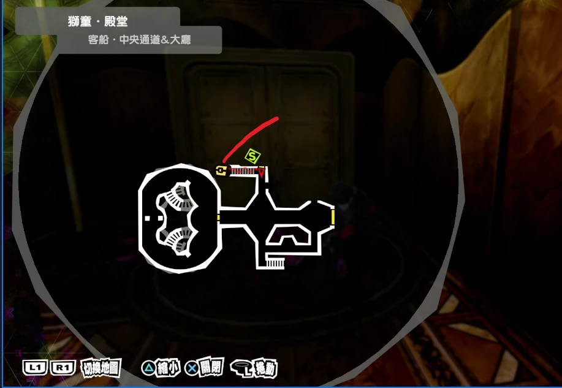
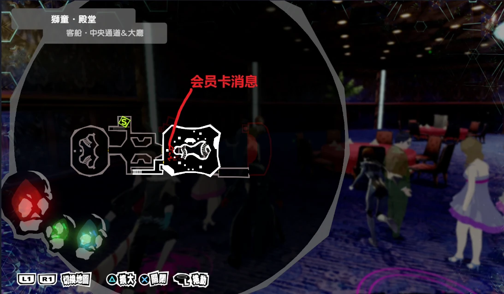
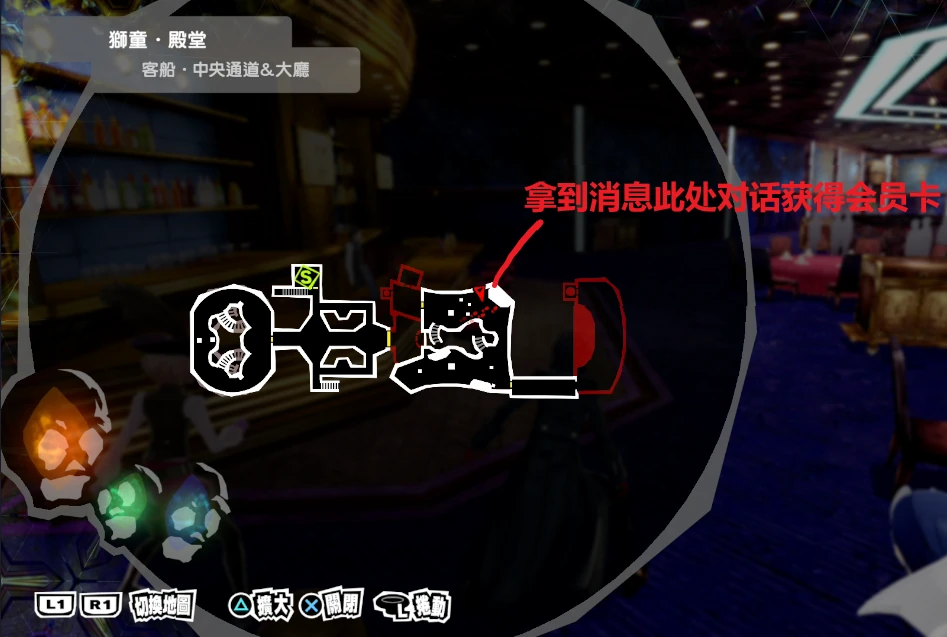
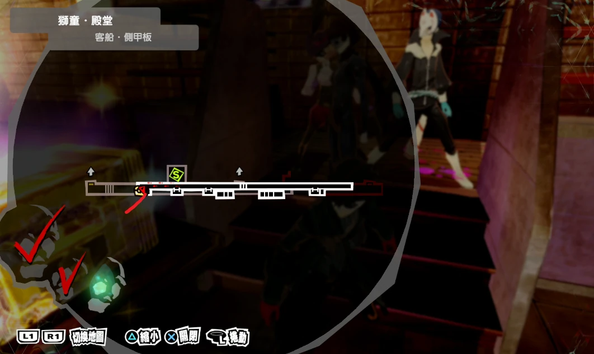
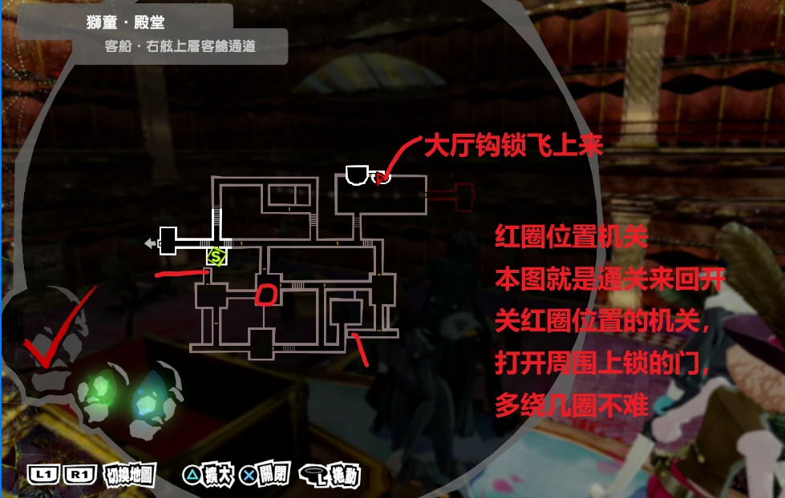
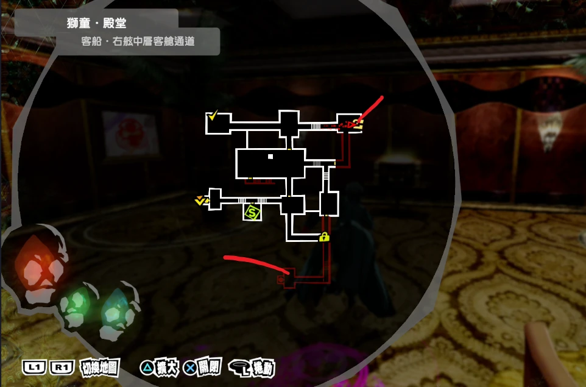
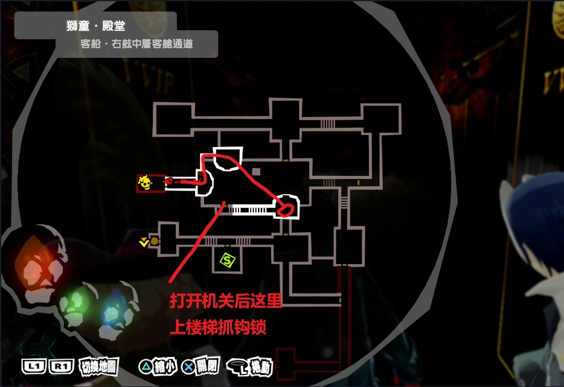
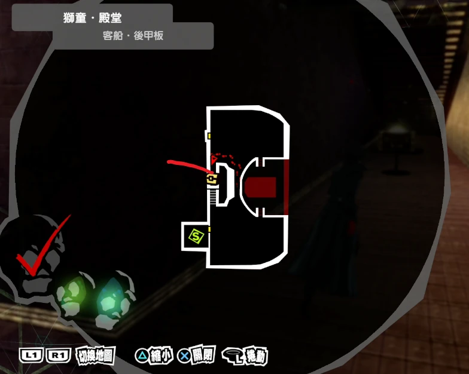
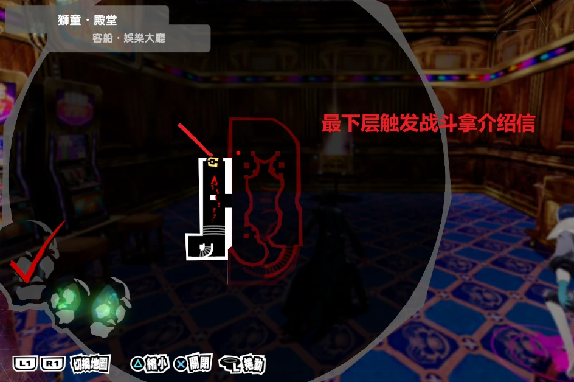
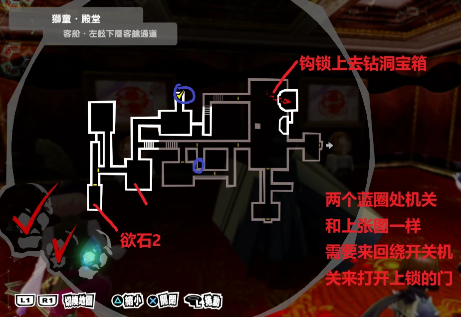
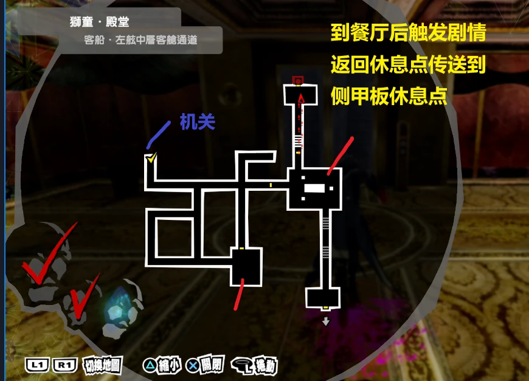
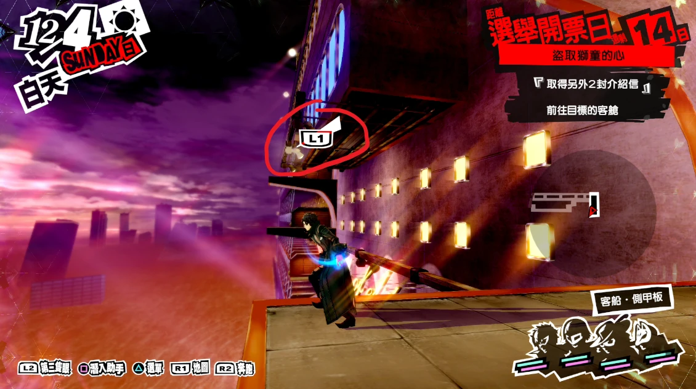
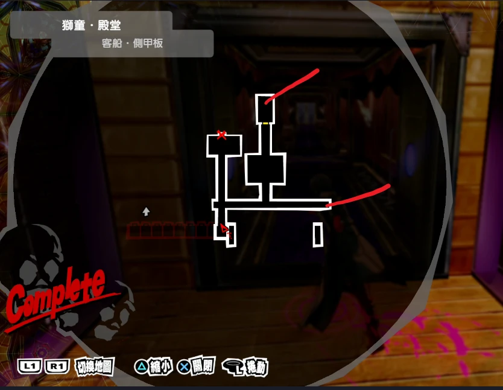
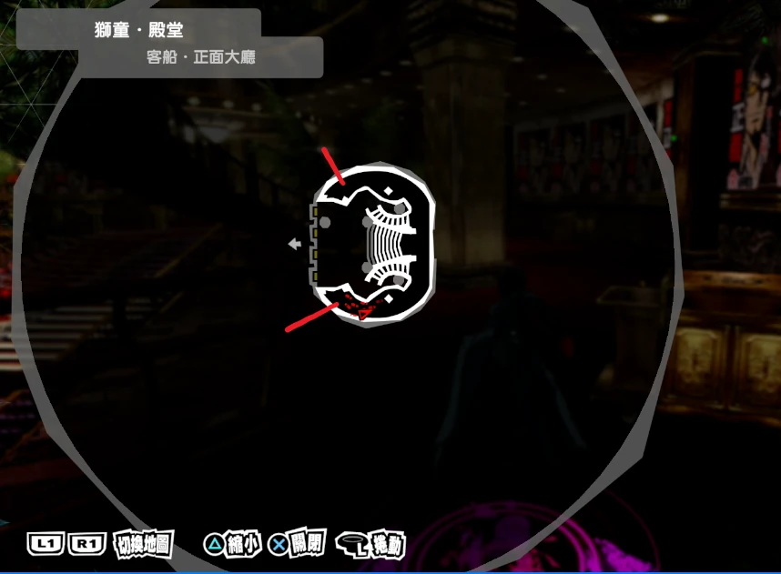
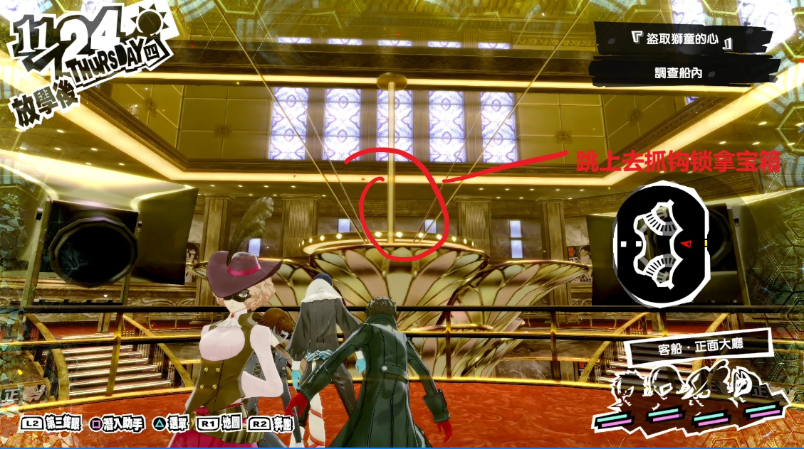
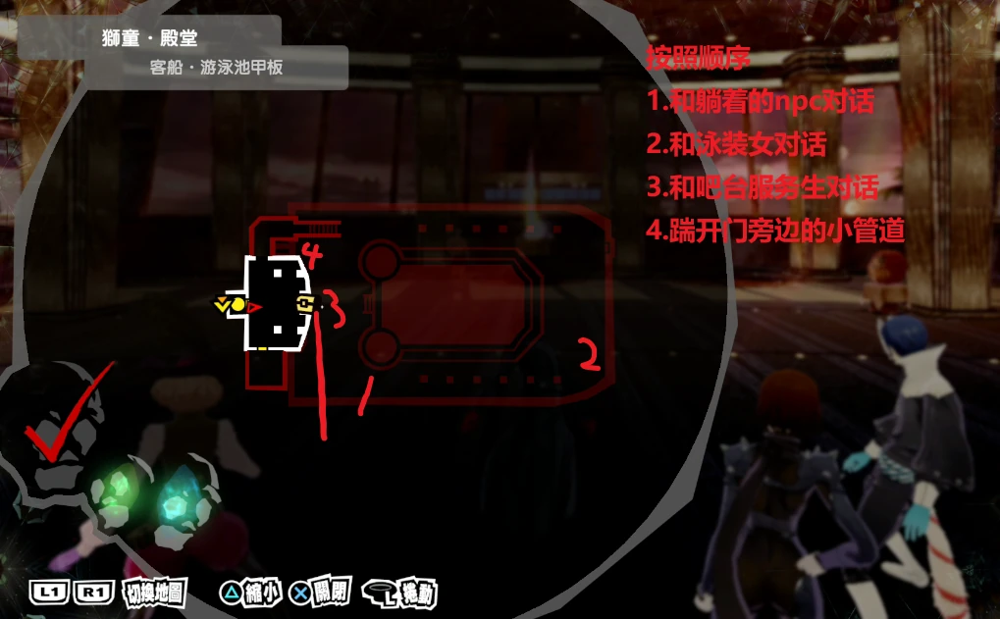
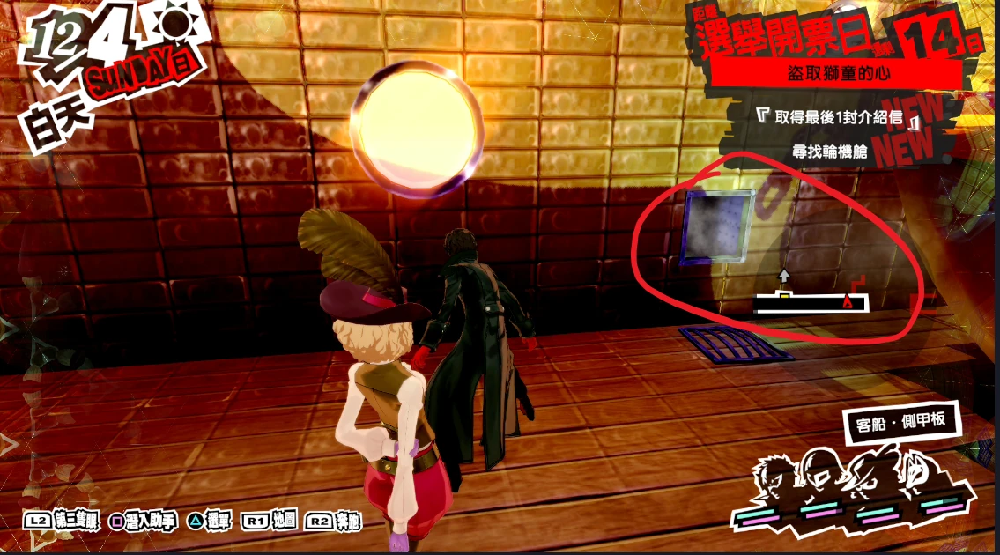